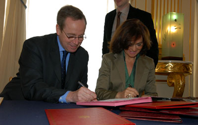

Signature de la convention de coopération avec l’Espagne sur les archives de l’exil
avec Mme Calvo, ministre de la culture espagnole
mardi 4 avril 2006
Madame
la Ministre, Chère Carmen Calvo,
Monsieur l’Ambassadeur,
Mesdames, Messieurs,
Chers Amis,
Je suis très heureux de vous accueillir ici aujourd’hui, Madame
la Ministre, et je garde un excellent souvenir de nos entretiens précédents,
notamment à Cordoue en mars 2005, puis à Paris avec Gilberto
Gil, pour inaugurer la magnifique exposition « Brésils Brésils
» qui a été présentée au Grand Palais de
mars à juin 2005, enfin à Madrid, en juin dernier, lors de la
rencontre des ministres de la culture, que vous aviez organisée sur
la diversité culturelle, et qui a joué un rôle décisif
dans la mobilisation de la communauté internationale qui a permis l’adoption,
à la quasi unanimité, de la convention de l’Unesco.
C’est l’histoire, l’histoire de l’Espagne, et celle de la France qui est au cœur de notre rencontre. Souvent, au cours des siècles, les histoires de nos deux pays se sont croisées. Notre rendez-vous d’aujourd’hui concerne ce moment du siècle dernier, il y a 70 ans, où l’Espagne vit un temps de guerre civile et la France devient une terre d’accueil et de passage pour un nombre élevé d’Espagnols contraints à l’exil.
De cette page d’histoire, beaucoup de traces demeurent, qui ont marqué profondément les sociétés française et espagnole et qui ont créé et renforcé les liens particuliers, profonds, intenses, intimes entre nos deux peuples. Comme l’a déclaré le Président de la République, lors du dîner d’Etat auquel j’ai eu l’honneur d’assister, en hommage à Sa Majesté, le Roi Juan Carlos, cette « intimité d’âme, profonde (…) est aussi celle du cœur et de la mémoire ». Et la rencontre, mercredi dernier, à Toulouse, des Souverains espagnols avec celles et ceux que le Roi a justement qualifiés de « survivants d’un long et douloureux exil » a été l’un des temps forts et particulièrement émouvants de la visite d’Etat, qui a montré la vitalité et la richesse, dans tous les domaines, des liens entre nos deux pays, tissés par l’histoire, par la culture, par nos projets communs au sein de l’Europe, par nos échanges économiques, scientifiques ou culturels.
Dans le domaine si important de la mémoire, sur lequel nous mettons l’accent aujourd’hui, de nombreux témoignages de cette période ont été recueillis, et sont toujours présents dans les archives de pays tels que la France, la Russie, le Mexique et Cuba.
L’Espagne veut aujourd’hui compléter le noyau initial des Archives générales de la guerre civile et réunir dans un même lieu, les documents concernant la guerre civile, le franquisme, l’exil et la déportation, afin de lancer ce travail de mémoire et de critique historique, qui n’avait jamais été réalisé jusqu’à présent, et qui constitue un hommage à ces « exilés », qui furent nombreux, à être accueillis en France.
C’est pourquoi, pour répondre à ce souhait légitime, nous avons décidé conjointement de définir un programme de coopération entre nos deux pays, qui vise à identifier et à valoriser les fonds documentaires, concernant l’Espagne et la France, relatifs à cette période.
La convention que nous signons aujourd’hui a une portée symbolique. En cet instant, Chère Carmen Calvo, je pense aux nombreux témoins, qui ont vécu cette période, aussi douloureuse, par les déchirements, les fractures, qu’elle a provoqués, au cœur même des familles, par les victimes qu’elle a faites, que fondatrice de notre modernité, par les valeurs qui étaient en cause, des valeurs universelles, que nous partageons aujourd’hui et qui demeurent plus actuelles que jamais, devant vous tous, dans ce ministère qui fut fondé par un homme, André Malraux, l’auteur de L’Espoir et de Sierra de Terruel qui n’hésita pas, dès le mois de juillet 1936, à rassembler des soutiens français aux Républicains, au sein d’une escadrille qu’il nomma Espana, je suis particulièrement heureux, ému et fier de signer avec vous, Madame, cette convention de coopération, qui permet ce travail de mémoire sans précédent. Je salue enfin la mise en place d’un comité scientifique français et espagnol, qui pourra utilement apporter son expertise et accompagner ce travail indispensable.
Je vous remercie.
photo : Didier Plowy/MCC